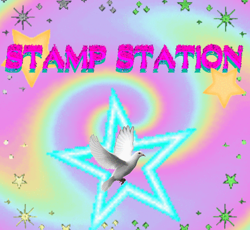
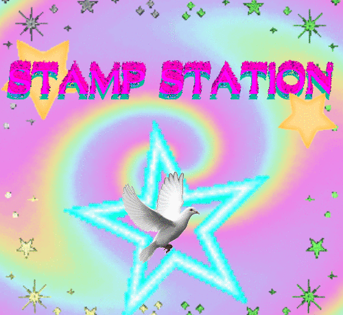

(click to pause broadcast)
TVTV is a service that allows users to host sites and videos. sharing thier thoughts and feelings to all relms.
Illistrated by Fritter
Written by Ambroshia the deep
If you can't naturally access the internet, you may need our offical TVTV Headsets to broadcast to one of our many channels. Headsets require a good understanding of thier's iner workings to insure long term use of the product and clear transmissons

Electrods allow the headset to read your brain waves
Energy pods are locked into this box to power the headset
Plug in the most recent up dates for the TVTV headset to keep it in tip top shape.
This port is used to charge the power box
The antena broadcasts transmition to your computer's TVTV posting page.

 
